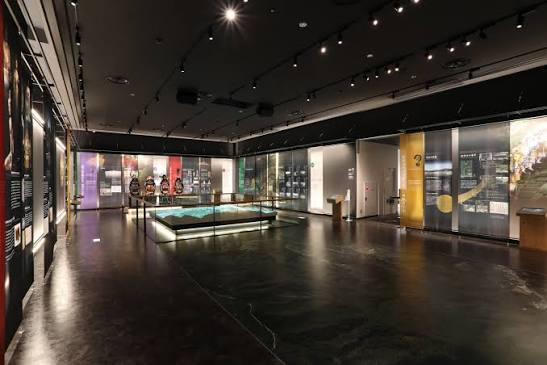

慈恩寺の麓に位置する総合案内施設「慈恩寺テラス」
慈恩寺の麓に位置する総合案内施設「慈恩寺テラス」
施設概要
慈恩寺テラスは、史跡慈恩寺の歴史や文化財、周辺の魅力をわかりやすく紹介する総合案内施設です。 本山慈恩寺の見学に先立ち、または見学後に立ち寄ることで、慈恩寺に対する理解を深めることができます。

洗練されたデザインで資料が並ぶ館内の展示エリア館内見学・展示
1. 展示エリア（展示室）
慈恩寺の歴史的背景や修験道に関する資料、大型パネルや立体模型などが展示されており、館内を巡りながらじっくりと鑑賞できます。
2. 映像展示・案内コーナー
慈恩寺全体の構造や歴史のながれを視覚的に解説した映像や案内展示が設置されています。
研修での着眼点
歴史ある史跡（慈恩寺）を現代の訪問者に向けてどのように展示・解説しているか、「歴史資産の案内・情報発信の工夫」に注目して館内を見学しましょう。
施設案内や最新情報は公式サイトをご確認ください。
慈恩寺テラス 公式サイトを開く